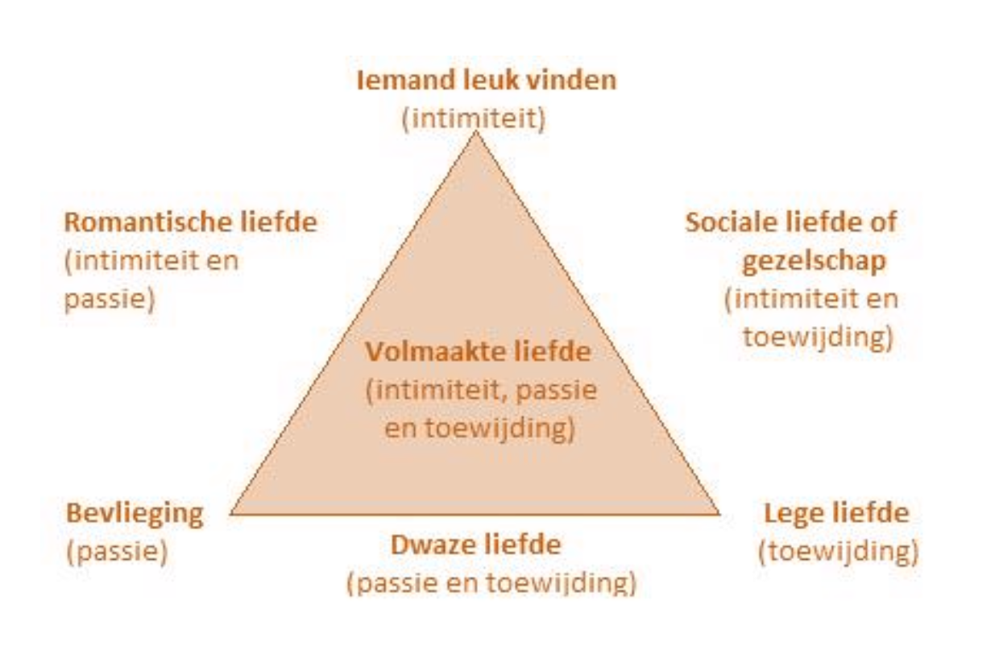
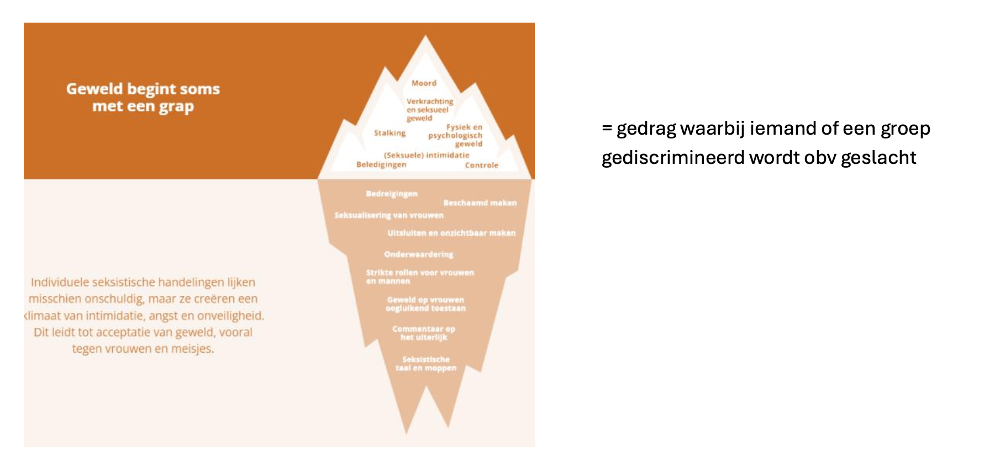

Life Events — Gecondenseerde Studiegids
Volledige samenvatting van alle 6 hoorcolleges + digitale tools, per onderwerp.
Inhoudstafel
- Hoorcollege 1: Inleiding
- Hoorcollege 2: Ouderschap
- Hoorcollege 3: Relaties
- Hoorcollege 4: School & Werk
- Hoorcollege 5: Verlies
- Hoorcollege 6: Omgaan met Life Events
- Digitale Tools
1. Hoorcollege 1: Inleiding
1.1 Wat zijn life events?
- Ingrijpende, uitzonderlijke of betekenisvolle gebeurtenissen in iemands leven
- Potentieel destabiliserend; diepgaande invloed op functioneren en welzijn
- Tools: SRSS (Social Readjustment Rating Scale), USQ (Undergraduate Stress Questionnaire), LEC-5
1.2 Benaderingen
| Benadering | Kern |
|---|---|
| Biopsychosociaal | Biologisch + psychologisch + sociaal |
| Levensloop | Zelfde gebeurtenis, andere leeftijd = andere impact; cumulatie van stress verzwaart |
| Existentieel | Schema's geven betekenis; life event past niet → nieuw betekenisproces (doel, coherentie, waarde) |
| Maatschappelijk | Individu ↔ microsysteem ↔ exosysteem ↔ macrosysteem |
1.3 Impactfactoren (subjectief!)
- Levensgeschiedenis: referentiekader, verwachtingen, coping uit eerdere ervaringen
- Persoonlijkheid: filter tussen gebeurtenis en reactie (doeners, gevoeligen, optimisten)
- Hechtingsstijl (Bartholomew & Horowitz): model van zelf × model van anderen → 4 hechtingsstijlen (o.a. angstig: zoekt steun, intens; vermijdend: afstand, emoties onderdrukken)
- Gezondheidstoestand: fysiek + mentaal + sociaal welbevinden (WHO); perceptie van gezondheid telt mee
1.4 Tools voor welbevinden
Positieve gezondheid (6 domeinen): lichaamsfuncties, mentaal welbevinden, zingeving, kwaliteit van leven, meedoen, dagelijks functioneren → spinnenweb
PERMA (Seligman): Positive emotions, Engagement, Relationships, Meaning, Achievement → SWB (subjectief welbevinden)
SWB-theorieën:
- Set-point theorie: SWB keert terug naar basisniveau
- Affectieve theorie: life events hebben langdurige impact
- Beide vullen elkaar aan
- Kanttekening: te veel positiviteit (euforie) kan nadelig zijn; negatieve emoties zijn soms functioneel
- Positieve gezondheid → spinnenweb toont sterktes én werkpunten
Balkmetafoor: draaglast (stressoren) vs. draagkracht (coping, steun, energie) → kernidee kwetsbaarheid-stressmodel
1.5 Stress
Definitie: druk wanneer eisen > aanpassingsvermogen
Holmes & Rahe (SRRS): Life Change Units, cumulatief effect. Beperkingen: geen subjectieve interpretatie, culturele verschillen, herinneringsbias
Lazarus (transactie): primaire beoordeling (bedreiging/schade/uitdaging?) + secundaire beoordeling (kan ik ermee omgaan?)
Soorten stressoren: catastrofes, levensgebeurtenissen, dagelijkse ergernissen
Werking stress: stressor (verandering, beheersbaarheid, voorspelbaarheid, ambiguïteit) → stressysteem (autonoom zenuwstelsel + HPA-as) → stressrespons
Typen stress:
| Acuut | Chronisch |
|---|---|
| Kort, intens (rampen, examens) | Langdurig (werkstress) |
| Kan PTSS geven | Kan burn-out geven |
Eustress vs. distress: + eustress (positieve spanning) vs. − distress (negatieve spanning)
Burn-out (Maslach): emotionele uitputting, depersonalisatie, verminderde prestaties
Polyvagaal theorie (3 principes):
1. Hiërarchie: ventraal vagale (veiligheid, verbinding) → sympathisch (fight/flight) → dorsaal vagale (freeze/fawn)
2. Neuroceptie: onbewuste scan op gevaar/veiligheid
3. Co-regulatie: de ander gebruiken om te kalmeren
Window of tolerance: hyperarousal ↔ window ↔ hypoarousal
1.6 Moderatoren
- Appraisals: primair (inschatting situatie) + secundair (hulpbronnen/coping)
- Attributies: intern/extern, stabiel/instabiel, globaal/specifiek, controleerbaar/oncontroleerbaar
- Locus of control: intern vs. extern (toeval, machtige anderen)
- Veerkracht: aanpassingsvermogen na life event; kenmerken: gebalanceerdheid, zinvolheid, doorzettingsvermogen, zelfvertrouwen
- Diabolomodel veerkracht: zelfzorg (basis) + zelfontplooiing + verbondenheid (centrale spil)
1.7 Stressweerbaarheidsmodel (kwetsbaarheid-stress / diathese-stress)
- Psychische problemen = interactie kwetsbaarheid (diathese) + stress (life events)
- Oorsprong: Zubin & Spring (schizofrenie)
- Risicofactor ≠ kwetsbaarheid (risico verhoogt kans; kwetsbaarheid = onderliggend mechanisme)
- Touwmetafoor: gewicht = stress; touw kan rekken of breken
- Risico-veerkrachtmodel: hoge kwetsbaarheid + hoge stress = ernstiger pathologie
- G × E × C model (Schiele): genetics × environment × coping
- Coping is trainbaar (stressmanagement, CGT, zelfmanagement)
- Veerkrachtfactoren o.a.: optimisme, altruïsme, goede copingvaardigheden, sterk sociaal netwerk
- Oudere modellen (ecologisch, genetisch, ontwikkelings-, neurofysiologisch, leermodellen) verklaarden slechts deel van pathologie → kwetsbaarheid als verbindende factor
2. Hoorcollege 2: Ouderschap
2.1 Zwangerschap
Fysiek per trimester:
- 1e: ochtendmisselijkheid, neurologische veranderingen (grijze stof ↓, witte stof ↑)
- 2e: zichtbare veranderingen
- 3e: ongemakken, slechtere slaap, verminderde mobiliteit
Mentaal: hormonen, identiteitsvragen, impact op partnerrelatie, werk, maatschappij
Periode rond bevalling: baby blues, postnatale depressie/angst, postpartum psychose, afscheid nemen van (het beeld van) een kind
2.2 Babyblues
- 50–80% vrouwen; geen aandoening maar hormonale aanpassing
- Daling progesteron/oestrogeen; piek dag 3–5; normaal weg na 6e week
- Symptomen: stemmingswisselingen, huilbuien, angst, vermoeidheid
2.3 Psychische problemen perinataal
- 1/5 vrouwen heeft psychische problemen tijdens zwangerschap + 1e levensjaar
- Perinatale depressie: 7–15% (zwangerschap), 10% (postpartum); ook bij partners
- Angststoornis: ~13%; OCS: 2,1–2,4% (dwanggedachten beschermen kind, nesteldrang); PTSS: 3–9%; postpartum psychose: 1–2/1000 (75% ongediagnosticeerd, risico herhaling)
2.4 Artikel: verlies van een kind (veerkracht gezinnen)
Klassieke rouwfases: verdoving → besef → acute rouw → herstelfase
Modern: relatie innerlijk reorganiseren, niet volledig loslaten
Gecompliceerde rouw: omstandigheden overlijden, leeftijd kind, suïcide, impact op siblings
Resiliency Model of Family Stress: beschermende factoren (open communicatie, steun, rituelen) vs. herstelfactoren (hoop, spiritualiteit, betekenisgeving)
Onderzoek (89 Belgische gezinnen, 3–6 jaar na verlies):
- 72% noemt communicatie als belangrijkste hulpbron
- Crisis als uitdaging (niet ontkennen) → betere aanpassing
- Formele + informele steun; lotgenotencontact
- Ouders: herdefiniëren; siblings: religieuze/spirituele steun
2.5 Groeiende veerkracht perinataal
- Perinataal/peripartum: van verlangen zwanger te worden tot 1 jaar na bevalling
- Matrescentie/patrescentie: transitie vergelijkbaar met adolescentie
- 3 onderdelen transitie: beeldvorming & verwachtingen, aanpassingsvermogen, engagement
- Protectieve factoren: prenatale screening, kraamzorg, kangoeroezorg, borstvoeding
2.6 Eerste 1000 dagen (bevruchting → 2e verjaardag)
- Snelle orgaan-/hersenontwikkeling; extra kwetsbaar
- Invloed op: lichamelijke gezondheid, cognitie, sociaal-emotioneel, school, werk
- Risico's: stress, roken, drugs, geweld, verwaarlozing, armoede
- SES: premature geboorte, laag geboortegewicht, overgewicht
- Heckman: investering vroeg > investering later
- Agentschap Opgroeien: Kind en Gezin, Groeipakket; onderscheid eerste 1000 dagen vs. IMH (Infant Mental Health, tot 5 jaar)
- PIMH: perinatale mentale gezondheid ouders + kind
2.7 Artikel: gezinsstress & sociaal-emotionele gezondheid kinderen (Amsterdam, 4406 tieners)
- SDQ gemeten; 17% gezinnen met stress; 15,1% kinderen verhoogd risico
- Met stress: 31% problemen vs. zonder: 11,5% → RR = 2,63
- Opvoedstress = sterkste impact; cumulatief effect
- Vicieuze cirkel: ouderstress → kindproblemen → meer ouderstress
-
JGZ: systematisch bevragen, vroeg ondersteunen
-
Spiritualiteit: geloof, kerkgang, graf bezoeken, muziek, natuur, rituelen
2.8 Familiereflex (GGZ)
- Familie als gelijkwaardige partner in triade: zorggebruiker – familie – hulpverlener
- Gebaseerd op richtlijn Steunpunt Welzijn, Volksgezondheid en Gezin
- Hulpverleners: familie onthalen, informeren, ondersteunen, kinderen betrekken, samenwerken tijdens traject; ook bij crisis, suïcide, opname, doorverwijzing/afronding
- Organisaties: familiebeleid, familievriendelijke infrastructuur, opleiding, evaluatie, praktische hulpmiddelen
- Beperkingen: focus residentiële zorg, algemene aanbevelingen, weinig innovatie, beperkte aandacht school/werk/buurt
- Implementatie vraagt: shared decision-making, stappenplannen, opleidingen, websites, coaching, tijd en middelen
2.9 Grootouder worden
- Combinatie rollen: werk, mantelzorg, opvang kleinkinderen
- Meeste grootouders: wekelijks contact; 1/5 wil vaker; minder contact → vaker wens voor méér contact
- Opvang: gepensioneerden helpen structureler; "back-up" bij ziekte/crèche-sluiting
- Afspraken over opvang, oppasdagen, noodsituaties, taakverdeling tussen grootouderparen
- Evenwicht: betrokken zijn vs. vrijheid; overbevraging (werk + mantelzorg + opvang)
- Genieten omdat: minder opvoedingsverantwoordelijkheid, meer kwaliteitstijd
- Maatschappelijke druk: tussen generaties in; opvoeden vandaag moeilijker (werk-gezin, opvang)
2.10 Pleegzorg & adoptie
Pleegzorg: 40% aanvragen vindt plaats; ondersteunende pleegzorg; crisispleegzorg (binnen 48u, 7/7); perspectief-biedende pleegzorg; pleegzorg volwassenen; Geef de wereld een (t)huis
| Risicofactoren | Beschermende factoren |
|---|---|
| Uitstel beslissing terugplaatsing | Snelle, stabiele plaatsing |
| Voortijdige beëindiging/overplaatsing | Ouders accepteren plaatsing |
| Conflicten ouders/pleegouders | Goede samenwerking |
| Negatieve opvoedstrategieën, mishandeling | Autoritatieve stijl, grenzen, steun |
| Onveilige hechting | Veilige hechting, veiligheid in gezin |
Adoptie gekend kind: zonder erkende adoptiedienst; voorwaarden: gehuwd/wettelijk samenwonend/min. 3j feitelijk samenwonend of alleenstaand; min. 25j en min. 15j ouder dan kind; programma + geschiktheidsverklaring familierechter
Adoptie ongekend kind: kind toegewezen door adoptiedienst
Adoptie: gekend kind vs. ongekend kind; interlandelijke adoptie Vlaanderen definitief stop tegen 2027 (uitdoofscenario; alleen dossiers met concrete match)
2.11 Scheiding
Risico's: huiselijk geweld, ouderlijke conflicten, psychologische oorlogsvoering, financiële problemen, slechte band met in-/uitwonende ouder
Beschermend: humor, genegenheid, goede band met beide ouders, regelmatig contact
Kinderen nodig hebben: uitleg, ruimte om te voelen/praten, tijd om te rouwen, conflicten opgelost, gezien worden in krachten
Ouders nodig hebben: info/klankbord, niet-veroordelende luisteraar, aandacht voor eigen verdriet
3. Hoorcollege 3: Relaties
3.1 Vriendschappen
- Vrijwillig maar niet vrijblijvend; centraal: vertrouwen, zelfonthulling, steun
- Levensloop: kleuters (spelen, wisselend) → lagere school (vertrouwen, gelijkaardige vrienden qua leeftijd/geslacht/etniciteit) → adolescentie (4–6 beste vrienden, intimiteit, loyaliteit, co-ruminatie) → volwassenheid (selectiever) → 65+ (oude vriendschappen, nabijheid)
- Artikel adolescentievriendschappen: hechte vriendschappen, sociale acceptatie & populariteit/likeability → welzijn later
- Vroege adolescentie → sociale acceptatie voorspelt later welzijn; late adolescentie → hechte vriendschappen
- 70% vriendschapsnetwerken vernieuwt elke 7 jaar (Utrecht); functie verandert (hartsvriend → uitgaansvriend)
3.2 Siblings
- Langstdurende relatie; ambivalent (warmte + conflict): vriend/steunfiguur én bron van stress
- Positief: bondgenoot, vertrouwenspersoon; negatief: jaloezie, ruzie, agressie
- Siblinggeweld: vooral tot ~10 jaar; meer bij lagere SES; biologische siblings warmer maar meer conflict; stief-/halfsiblings minder warmte
- JOP-monitor 2023: 5463 jongeren, 3795 met sibling; ~1/5 maandelijks/wekelijks conflict; ~5% dagelijks agressie
3.3 Partnerrelaties
- Monogaam, polygamie, polyamorie
- Triangulatietheorie Sternberg: drie componenten (intimiteit, passie, toewijding) → verschillende liefdesvormen

| Positie | Type liefde | Componenten |
|---|---|---|
| Hoek intimiteit | Iemand leuk vinden | Alleen intimiteit |
| Hoek passie | Bevlieging | Alleen passie |
| Hoek toewijding | Lege liefde | Alleen toewijding |
| Zijde links | Romantische liefde | Intimiteit + passie |
| Zijde rechts | Sociale liefde / gezelschap | Intimiteit + toewijding |
| Zijde onder | Dwaze liefde | Passie + toewijding |
| Midden | Volmaakte liefde | Intimiteit + passie + toewijding |
3.4 Discriminatie, racisme, seksisme
Discriminatie: ongerechtvaardigd onderscheid op beschermd criterium; oorzaken: socialisatie, ervaring, representatie
Racisme: systeem van dominantie en privileges; antiracismewet; micro-agressies
Seksisme: = gedrag waarbij iemand of een groep gediscrimineerd wordt obv geslacht

Kernboodschap: Geweld begint soms met een grap. Individuele seksistische handelingen lijken misschien onschuldig, maar ze creëren een klimaat van intimidatie, angst en onveiligheid. Dit leidt tot acceptatie van geweld, vooral tegen vrouwen en meisjes.
Ijsberg — boven water (zichtbaar/extreem): moord, verkrachting en seksueel geweld, stalking, fysiek en psychologisch geweld, (seksuele) intimidatie, beledigingen, controle
Ijsberg — onder water (genormaliseerd): bedreigingen, beschaamd maken, seksualisering van vrouwen, uitsluiten en onzichtbaar maken, onderwaardering, strikte rollen voor vrouwen en mannen, geweld op vrouwen oogluikend toestaan, commentaar op het uiterlijk, seksistische taal en moppen
3.5 Gender & transgender (artikel)
- Gender = culturele normen rond mannelijkheid/vrouwelijkheid; transgender zijn ≠ psychische aandoening
- Mentale problemen door minority stress (discriminatie, stigma, afwijzing)
- Beschermend: pride, community, zelfacceptatie, steunnetwerk, rolmodellen, safe spaces, mindfulness
- Genderbevestigende zorg verbetert mentale gezondheid
- Genderaffirmatieve benadering: respect, autonomie, geen gatekeeping
- Consent: angst/depressie ≠ automatisch uitstel; wel bij psychose die begrip verhindert
- Perioperatief: afspraken, wondzorg; roken verhoogt complicaties (necrose, infecties)
- Hormonen behouden bij opname; correcte naam/voornaamwoorden
- Psychotherapie niet verplicht; conversietherapie afwijzen
3.6 In-group vs. out-group
- Out-group homogeniteit; contrast vs. assimilatie
- Centrale vs. perifere route bij out-group
- Jane Elliott: blue eyes/brown eyes → vooroordelen en empathie
- Minimale groepssituatie: in-group favoritisme
- IAT: bewuste vs. onbewuste attitudes (Gladwell); maatschappelijke beïnvloeding van associaties
3.7 Inclusieve zorg (artikel, 19 professionals)
- Kwalitatief verkennend; semigestructureerde interviews (Teams); sneeuwbalmethode; thematische analyse tot saturatie
- Jongeren met migratieachtergrond: meer discriminatie, minder formele hulp
- Stagediscriminatie, microagressies, prestatiedruk
- Cultuursensitieve zorg: herkenning, vertrouwen, empathie, "eerlijke diagnostiek"
- Professionals mét migratieachtergrond: sneller herkenning discriminatie
- School = belangrijke plek vroegdetectie
4. Hoorcollege 4: School & Werk
4.1 Transitie kleuterschool (artikel ECLS-K:2011, 13.390 kinderen)
- Overgangsproblemen (huilen, angst, schoolweigering) voorspellen problemen tot 5e leerjaar
- Mediatiemodel: ondersteuning → minder problemen → betere ontwikkeling; moderatiemodel: ondersteuning als buffer
- Analyse: padanalyse, latent class analysis (LCA)
- 3 schooltypes: minimal (29%), high basic (63%), intensive (9%)
- High basic supports (info ouders + klasbezoeken) = meest effectief; kinderen deden het beter academisch
- Intensive supports ≠ beter; geen buffering bij bestaande problemen
- Preventief, niet curatief; eenvoudige maatregelen (communicatie + klasbezoek) volstaan vaak
4.2 Lagere school & middelbaar
- Meer structuur: vaste lestijden, stilzitten, huiswerk, evaluaties, minder vrij spel
- Kinderen: langer concentreren, zelfredzaam, agenda beheren
- Context thuissituatie, ouder-kindrelatie altijd meenemen; goed geïnformeerde ouders → vlottere overgang
- Middelbaar: grotere school, moeilijkere stof, zelfstandig plannen, schoolkeuzestress (inschrijvingsbeperkingen Vlaamse steden)
4.3 Hoger onderwijs / op kot (Transitions-programma)
- Eenzaamheid, heimwee, stress; meer zelfredzaamheid; identiteitsontwikkeling
- Transitions: mental health literacy + life skills; quasi-experimenteel, 2397 studenten, 5 Canadese instellingen
- Onderwerpen: studievaardigheden, stress, seksualiteit, campusondersteuning, hulp zoeken
- Resultaat: meer kennis, minder stigma, minder stress, 2,75× vaker hulp zoeken
- Beperkingen: geen volledige randomisatie, uitval, weinig diverse populatie
- Flexibel (workshops, online); nuttig in Vlaanderen maar vraagt tijd, begeleiding, financiering
4.4 Pesten
- Langetermijnimpact (National Child Development Study, UK vanaf 1958: effecten op 50e)
- Definitie: intentioneel, herhaald, machtsonevenwicht
- Cyberpesten: anoniem, altijd zichtbaar, overal mogelijk
- Gevolgen: lager zelfbeeld, sociale angst, minder levenstevredenheid
- Pabian et al.: ervaren impact belangrijker dan objectieve ernst; PTG mogelijk
- Vlaamse + Nederlandse steekproef (1010 + 650 jongvolwassenen)
4.5 Job, ontslag, werkloosheid
- Jobwissel: onzekerheid maar ook groei; positief als inhoud past
- Ontslag: verlies inkomen, identiteit, structuur, sociale contacten; kan ook opluchting zijn
- Werkloosheid: welbevinden herstelt soms tot 3 jaar; afschrikeffect
- Impact hangt af van inschatting kansen op nieuw werk
4.6 Burn-out (Maslach & Leiter)
3 dimensies: emotionele uitputting, cynisme/depersonalisatie, verminderde persoonlijke bekwaamheid
Ontwikkeling: start vaak als geëngageerde werknemer → overbelasting → uitputting
6 mismatch-domeinen: workload, control, reward, community, fairness, values
Gevolgen: psychisch (depressie, angst), lichamelijk (slaap, immuunsysteem), werk (absenteïsme), sociaal
Individueel: perfectionisme, neuroticisme, lage zelfwaardering, externe locus of control
Engagement = positief tegenovergestelde (energie, betrokkenheid, voldoening)
5. Hoorcollege 5: Verlies
5.1 Verlies van een thuis
- Verhuizen = afscheid van herinneringen en hoofdstuk in het leven
5.2 Vrijwillige migratie
- Uitdagingen: cultuurshock, taalbarrière, bureaucratie (visum, verzekering), heimwee
- Positief: groei, autonomie, nieuwe contacten
- EHERO: migranten ~0,5 punt gelukkiger (schaal 0–10), vooral eerste 5 jaar
5.3 Onvrijwillige migratie (artikel Ethiopië)
Bronnen veerkracht: sociale steun, werk, onderwijs, religie, gemeenschapsbetrokkenheid
Opiniestuk "Van energie naar kracht": energie → frustratie bij gebrek aan kansen; kleinschalige opvang, taal als middel (perfect taalgebruik kan uitsluiten), werk voor integratie
5.4 Verhuis naar WZC
- 38% 60-plussers negatief beeld; "laatste halte"; thuiszorg, mantelzorg, trapliften, alarmknoppen
- Verlies: spullen, autonomie, privacy (vaste maaltijden, gedeelde ruimtes); desoriëntatie bij dementie
- Onbegrepen gedrag: weglopen, roepen, agressie
- Familie: schuldgevoel, conflict; culturele verschillen (90% niet-Belgen: zorg voor ouders = morele plicht)
- Individuele + interactionele veerkracht
5.5 Ouder worden
- Lichamelijke beperkingen, pensionering (structuur/identiteit verlies), lege nest, overlijden geliefden
- Rouw: ontkenning, verdriet, schuld, angst, eenzaamheid; herhaald verlies op oudere leeftijd
5.6 Palliatieve zorg
- Kwaliteit van leven bij levensbedreigende ziekte; dood niet bespoedigen/uitstellen
- Psychosociale behoeften: begrip, acceptatie, zelfrespect, veiligheid/geborgenheid, erbij horen, liefde/aanraking, spiritualiteit, hoop
- Distress, demoralisatie, angst, depressie — depressie ≠ normaal onderdeel sterven
- Behandeling: gesprekken, ACT, mindfulness; levensverhaal, muziek-/aromatherapie; antidepressiva; kortdurend benzodiazepines bij angst
- Barrières herkenning: schaamte patiënt, onvoldoende opleiding hulpverlener; gouden standaard = klinisch gesprek
5.7 Afscheid & verlies dierbare
Levenseinde:
- A: geen zinloze behandeling starten/voortzetten (therapeutische hardnekkigheid vermijden)
- B: pijnstilling, palliatieve sedatie (= verlichten stervenproces)
- C: euthanasie — wilsbekwaam (meerderjarig of wilsbekwame minderjarige + toestemming vertegenwoordigers), ondraaglijk lijden, medisch uitzichtloos, schriftelijk verzoek; terminale vs. niet-terminale (2de/3de arts); voorafgaande wilsverklaring alleen bij onomkeerbaar coma
- D: levenseinde zonder wettelijk kader
Artikel Bonanno et al. (partnerverlies, 205 deelnemers, prospectief):
| Patroon | % | Kenmerk |
|---|---|---|
| Resilience | ~46% | Meest voorkomend; stabiel functioneren |
| Common grief | | Minder vaak dan gedacht |
| Chronic grief | | Sterke afhankelijkheid partner |
| Chronic depression | | Al depressief vóór overlijden |
| Depressed-improved | | Zorg was belastend |
| Delayed grief | | Amper gevonden |
- Weinig zichtbare rouw ≠ koud/ongehecht
- Preloss-factoren cruciaal
6. Hoorcollege 6: Omgaan met Life Events
6.1 AREA-model (Wilson & Gilbert)
Attent → React → Explain → Adapt
Betekenisgeving = cruciaal. Factoren: nieuwheid, variatie, onverwachtheid, zekerheid, verklarende coherentie, persoonlijke attributie
6.2 Transactionele theorie (Lazarus)
Primair: schade/verlies, bedreiging, uitdaging
Secundair: interne (zelfvertrouwen) + externe (steun) hulpbronnen
Smith & Lazarus: motivationele relevantie, congruentie, verantwoordelijkheid, copingmogelijkheden, toekomstverwachting → emoties
Voorbeelden primaire beoordeling: schade (ontslag), bedreiging (examen), uitdaging (nieuwe job)
Stressvolle gebeurtenissen: op handen, onverwacht, onvoorspelbaar, onduidelijk, ongewenst, niet controleerbaar, grote levensverandering
Kritiek: cirkelredenering, stress ook bij voldoende hulpbronnen; negatieve zelfattributies bemoeilijken verwerking
6.3 Sense of Coherence (Antonovsky)
- Comprehensibility (begrijpelijkheid)
- Manageability (hanteerbaarheid)
- Meaningfulness (betekenisvolheid)
6.4 Palliatief palet (Portzky)
- Palliatieve activiteit: tijdelijk onderbreken negatieve gevoelens
- Continuüm: positief (sport, hobby) → minder gunstig (dwangmatig) → destructief (alcohol, automutilatie, suïcide)
- UCL (Utrechtse Coping Lijst): subschaal palliatief reactiepatroon — mengt positief en destructief
- P3-schaal: onderscheid positief/destructief
- Gezond profiel: veel positief, weinig destructief; curve vlak naar einde
- Borderline: wisselend patroon — positief bij goed, snel destructief bij verslechtering
- Presenteïsme verhoogt burn-outrisico
- Rouw: ontspanning mag naast verdriet; sociale vs. emotionele eenzaamheid
6.5 Coping (Lazarus & Folkman)
| Stijl | Doel |
|---|---|
| Probleemgericht | Stressor aanpakken |
| Emotiegericht | Emoties reguleren |
| Controlegericht | Controle krijgen |
| Vermijdend | Ontsnappen |
| Betekenisgericht | Groei, PTG, nieuwe doelen |
5 functies (Cohen & Lazarus): schade verminderen, aanpassen, zelfbeeld behouden, emotioneel evenwicht, relaties behouden
6.6 Rouw — modellen
Kübler-Ross (5 fasen): ontkenning → protest/woede → onderhandelen → verdriet → aanvaarding
- Kritiek: niet lineair, niet voor iedereen; rouwen is iets wat je leert
Worden (4 taken): erkennen, pijn ervaren, aanpassen (nieuwe routines), verbinden (herinneringen bewaren)
Dual Process Model (Stroebe & Schut): verliesgerichte ↔ herstelgerichte coping (slingerbeweging); "één been in verlies, één in wereld die doordraait"
IPM (Guldin & Leget): 5 dimensies — fysiek, emotioneel, cognitief, sociaal, spiritueel; existentiële spanningen (leven/dood, controle/machteloosheid)
6.7 Betekenisgeving (Crystal Park)
- Global meaning vs. situational meaning
- Stress = discrepantie tussen beide
- Coping via: spiritualiteit, rituelen, tradities, kunst/creativiteit
6.8 Sociale steun
- Materieel: praktische/financiële hulp
- Informatief: advies, informatie
- Emotioneel: luisteren, begrip, troost
6.9 Herstel (GGZ)
- ≠ genezing; leven met kwetsbaarheid; persoon is expert
- Verschil veerkracht: veerkracht = terugveren; herstel = veranderd blijven (knoop in touw)
- Anthony (1993): hoop, controle, betekenisvolle participatie
- 4 fasen: overweldigd → worstelen → leven met → leven voorbij
- CHIME (Leamy et al., 2011): Connectedness, Hope, Identity, Meaning, Empowerment
- Thomas meta-analyse (2018): persoonsgericht herstel → meer herstel, hoop, empowerment; combinatie met ervaringsdeskundigen effectief
- Empowerment + ervaringsdeskundigheid
6.10 Posttraumatische groei (PTG)
- Positieve verandering na trauma; trauma zelf is niet positief
- 5 domeinen: relaties, nieuwe mogelijkheden, persoonlijke kracht, spiritualiteit, waardering leven
- PTG ≠ veerkracht (PTG = hoger niveau dan vóór)
7. Digitale Tools
Ouderschap
| Tool | Doel |
|---|---|
| perinatalehulp.be/zelfhulp | Depressie na zwangerschap; traject ~10 weken; iemand uit omgeving betrekken |
| kinderwens.org/vanrozenaarbrozewolk | Veerkracht jonge ouders (1001 dagen) |
| wolkinmijnhoofd.be | Mentale gezondheid zwangerschap–1 jaar postpartum |
| vaderen.be | Vaderschap 0–8 jaar |
| Keep in Touch Kit (app) | Gescheiden gezinnen; kalender, checklists, chatroom |
| scheidingskoffer.be | Scheiding; reflectievragen, tips, liedjes |
| steunpuntadoptie.webinargeek.com | Adoptie webinars |
| a-buddy.be | Lotgenoten geadopteerden |
| zojong.be | Mantelzorgers |
| druglijn.be/grip | KOPP-kinderen |
Relaties
| Tool | Doel |
|---|---|
| vragenlijsten.mijnpositievegezondheid.nl | Positieve gezondheid spinnenweb (6 domeinen) |
| samenveerkrachtig.be | GGZ-veerkracht (oktober + het hele jaar) |
| reacttoracism.be | Racisme & veerkracht |
| kennispleingehandicaptensector.nl | Handicap & veerkracht |
| noknok.be | Jongeren 12–16 jaar |
School & Werk
| Tool | Doel |
|---|---|
| moodspace.be | Studentenwelzijn; aanrader examenperiode |
| allesoverpesten.be | Pesten |
| pimento.be | Hulpverleners + pesten |
| vrt.be/edubox | Online pesten |
| tegek.be | Burn-out psycho-educatie |
| geluksdriehoek.be | Geluk (zijn, voelen, omringd) |
Verlies
| Tool | Doel |
|---|---|
| waarblijftmijntijd.mantelzorg.nl | Mantelzorgtijd |
| mijnherinneringaanjou.be | Digitale herinneringen overledene |
| missingyou.be | Rouw jongeren/jongvolwassenen |
| onlinehulp-apps.be/rouwkost | Rouw psycho-educatie; normale rouw of aanvulling op begeleiding |
| bovendewolken.be | Foto's sterrenkinderen |
Klik of Spatie = omdraaien · ← → = vorige/volgende · Enter = ken ik (2× = echt beheerst) · Backspace = ken ik niet
Meer aandacht nodig
Kaarten die je minstens 2× als “ken ik niet” hebt gemarkeerd. Oefen deze extra.
Pas vragen en antwoorden hier direct aan. Wijzigingen worden automatisch opgeslagen in je browser. Gebruik Exporteer backup om een kopie te bewaren, of Herstel origineel om terug te gaan naar de standaardkaarten.
Selecteer een kaart
Oefen met meerkeuzevragen in examstijl (casussen, stellingen, tool-keuze). Inclusief reconstructie van het 1e zit 2025-2026 (antwoorden op basis van cursus + studentenconsensus; niet officieel geverifieerd). Resultaten worden lokaal opgeslagen in je browser (per apparaat, geen database).
Nieuw oefenexamen
Recente resultaten
Visueel overzicht per hoorcollege en per complex artikel. Kies links een mindmap. Klik en sleep om te pannen · scroll om te zoomen (in de SVG).
Snelle examenchecklist
Vink af wat je vanbuiten kent. Je voortgang wordt lokaal opgeslagen.